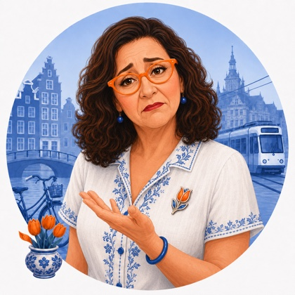
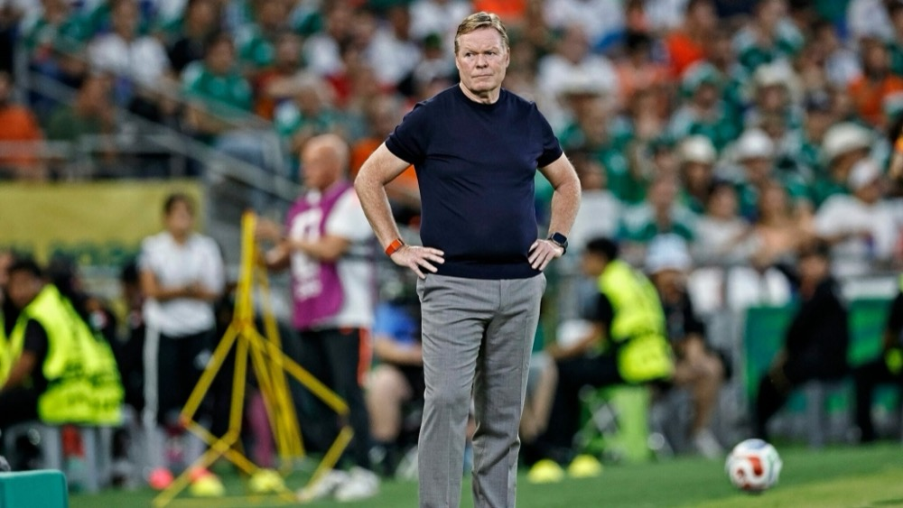
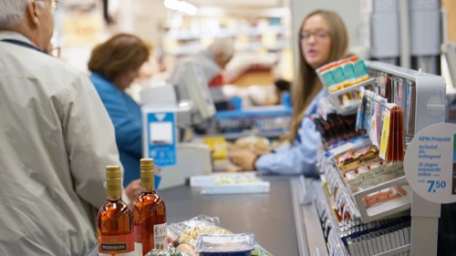
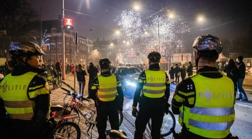
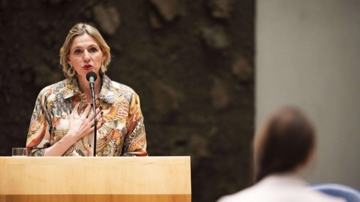
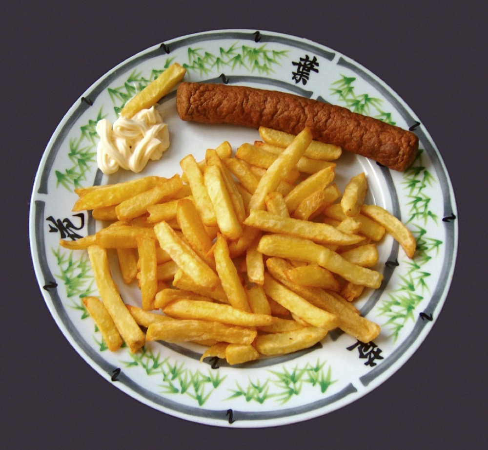
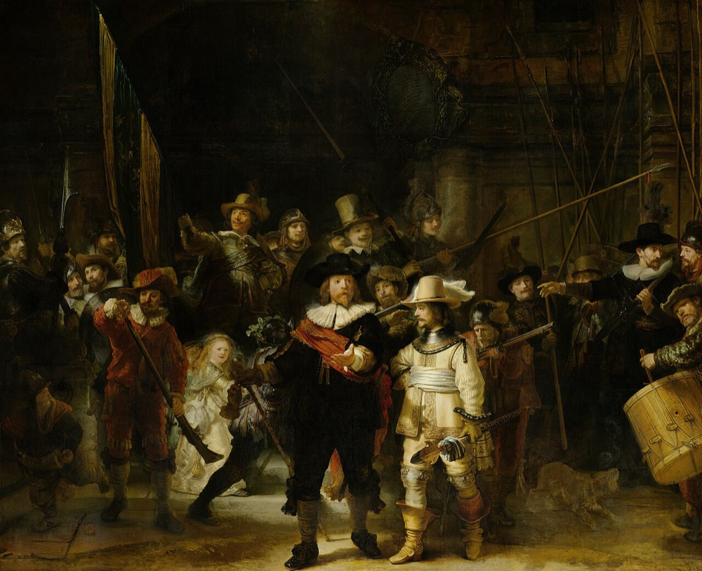
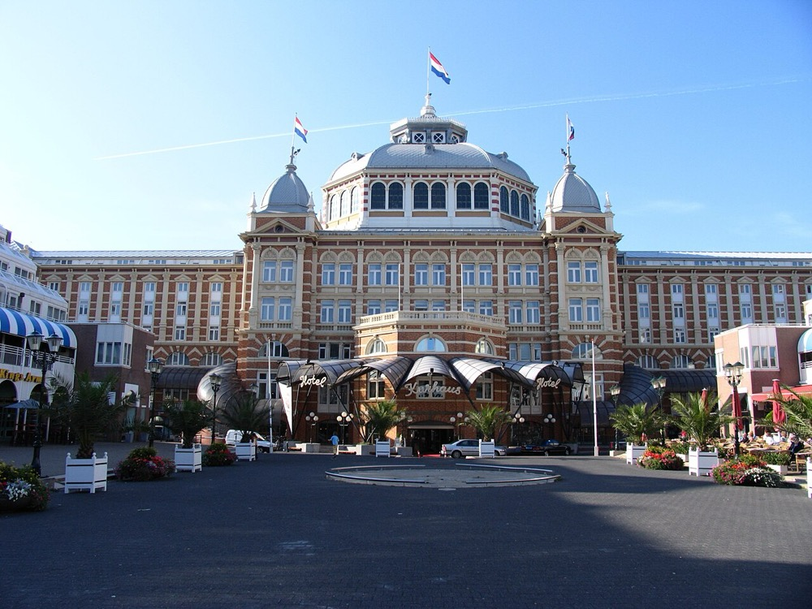
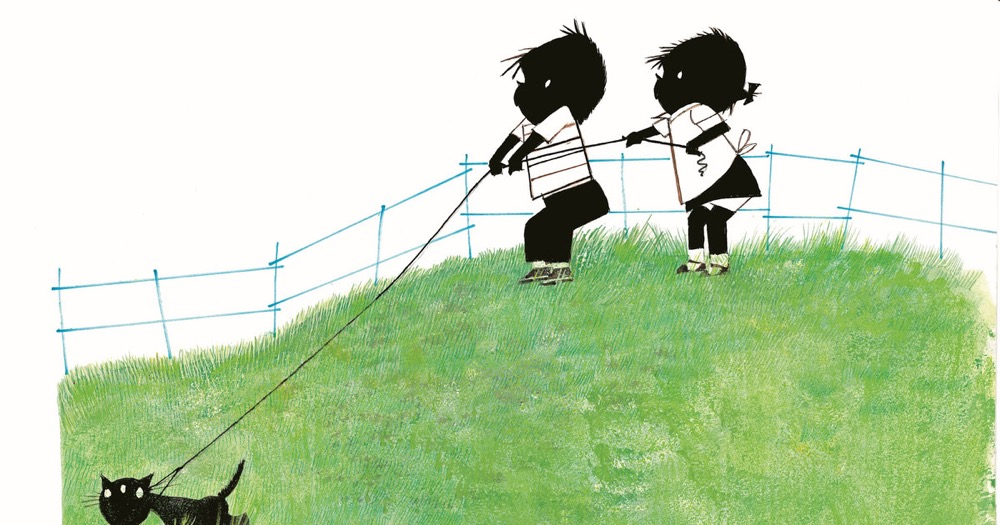

A letter from Tulp de Gid 🌷
Lieve Geltovas, I write to you the morning after a heartbreak. Last night the whole country sat in front of the television dressed in orange, and last night the whole country went to bed with a lump in its throat, because our football team is out of the World Cup, beaten in the cruelest way the game has. I will tell you about it gently, because grief over football is one of the very first fluencies you will pick up here. And then I promise to take you somewhere lighter, because the schools are letting out, the country is quietly packing the car for the summer, and there is a plate of fries with a very silly name waiting for you at the end of this letter. Pour yourself something cool and come and sit with me.

The big story
The orange dream ends, and the country nurses a kater
There is no gentle way to lose on penalties, and last night we lost on penalties. Our football team, the Oranje, the ones in orange you will soon learn to love, had reached the knockout rounds of the World Cup and met Morocco. We scored, they equalised in the dying moments, and then came the shootout, which is football's own particular way of breaking a heart slowly, one kick at a time. This morning our coach, Ronald Koeman, the tired man in the photograph, resigned, and a loud country has gone very quiet.
And here is the thing I most want you to understand about your new home. The Hague is one of the most gloriously mixed cities in the country, with one of its largest Moroccan communities, so last night, on the very same streets, half the city grieved while the other half poured out of its front doors singing and honking for Morocco. Two feelings, one city, and no contradiction in it at all. You are moving somewhere wonderfully full of everyone.
 A few quick things, told quickly
A few quick things, told quickly
A small avalanche of changes, all today
The first of July is the day the Netherlands quietly resets a hundred little dials at once. This year the minimum wage rose to just under 15 euros an hour, pensions and benefits ticked up, and social-housing rents were allowed to climb by 4.1 percent. One to file away for when you are pricing a life here: there is now also a 3-euro fee on cheap parcels arriving from outside Europe, so those bargain packages from far away are a little less of a bargain.

The end of do-it-yourself fireworks
Dutch New Year's Eve has always been gloriously, alarmingly loud, a whole nation setting off its own fireworks in the street until the small hours. No longer. A permanent ban on consumer fireworks is now settled, beginning this coming New Year, so the next Oud en Nieuw you come over for will be a calmer, professionally run affair. An era closes. Some cheer it, some grumble at it, and all of it is very Dutch.

A rare bit of good news for the care system
Here is something kinder. After a long and loud fight, the government has just reversed billions of euros in planned cuts to care for the elderly and the disabled, putting the money back where it was meant to go. This is a country that argues fiercely and then, more often than not, remembers to look after its own. Not perfect, but it bends toward care in the end.
🌷 Tulp's Dutch Calendar Radar
The whole country goes on holiday
There is no great holiday to mark this week, and that itself is the news, because this is the fortnight the Netherlands empties out. Region by region the schools let their children loose for six long weeks, and half the country loads up the car and points it south toward France, in a traffic jam so faithful it is read out in the weather forecast. If you telephone anyone Dutch this month and cannot reach them, this is why. They are in a field somewhere near Bordeaux. The one great spectacle still ahead in July is the Vierdaagse in Nijmegen, when tens of thousands of people walk for four days straight, simply to prove that they can.
 Dish of the week
Dish of the week
Patat met, and the wall you pull your dinner from
Since half the country is at the seaside this month, your kitchen may as well smell of the seaside too, which means fries. Not just any fries: patat, cut thick and fried twice, ordered patat met, which simply means "fries with." The "with" is a fat spoonful of mayonnaise, the milder, slightly sweet Dutch sort called fritessaus. Feeling brave? Ask for a patatje oorlog, a "little fries war," and they arrive buried under mayonnaise, curried ketchup, and raw chopped onion, a magnificent mess named for the battlefield it resembles.
And here is the part that will truly delight you. The Dutch buy this from a snackbar, and at a chain called FEBO your dinner comes out of a wall. A row of little coin-operated glass hatches holds hot croquettes and burgers, and you feed in your coins, pop the door, and pull your supper straight out, uit de muur, out of the wall. It is the great institution of the walk home, and you have honestly never seen anything like it. The smooth dark little sausage tucked beside the fries on that plate is a frikandel, the other hero of the snackbar.
 Artwork of the week
Artwork of the week
The Night Watch, which is neither a night nor its real name
This week, the most famous painting in the country, and very nearly everything you think you know about it is wrong. Rembrandt finished it in 1642, and we call it The Night Watch, except it is not a night scene at all. For centuries it simply lay hidden under so much grime and yellowed varnish that everyone took it for a thing set in darkness. Clean it off, as the museum finally has, and broad daylight comes flooding back. Its true name is a solemn mouthful about a militia company and their captain, Frans Banninck Cocq, which is precisely why not a soul on earth uses it.
There is one more secret folded inside it. The canvas you see is smaller than the one Rembrandt actually painted, because in 1715 strips were sliced off all four sides to make it fit a wall, losing two figures on the left entirely. Not long ago the Rijksmuseum used a surviving old copy and a great deal of clever technology to restore those lost edges, so that at last we can see the whole thing as he meant it. And look for the little girl lit up in gold in the middle of the crowd. She is the quiet, glowing heart of the whole painting.
 The Hague & Scheveningen dispatch
The Hague & Scheveningen dispatch
A little local history first, and it is a good one. The grand domed palace above, standing right on the Scheveningen seafront, is the Kurhaus, built in 1885 as a spa hotel and concert hall for people who came to take the sea air. Maria Callas sang beneath its painted ceilings, and so did Marlene Dietrich and Duke Ellington. But its wildest night came in August 1964, when the Rolling Stones played their very first concert on the European mainland there. It lasted about seven minutes before the police cut the power, at which point the crowd tore out the chairs and hurled them at the chandeliers. You will walk past this building every single time you go down to the beach.
And something to put straight in the diary. From 3 to 19 July, a park in your future neighbourhood fills up with De Parade, the only travelling theatre festival of its kind anywhere in the world: a little village of tents where you wander between thirty-minute shows with a drink in your hand. There is a whole KinderParade for the smallest ones, so Amellia is well looked after, and a "No Dutch Required" programme built for people who do not yet speak the language, so you are looked after too. A perfect, gentle first taste of a Hague summer. More about De Parade →
My little pick for the week
Now, a small treasure, this one chiefly for the youngest of you. The Rijksmuseum has just opened a whole exhibition of the original drawings of Fiep Westendorp, the illustrator who gave shape to Jip en Janneke, the two little friends in black silhouette that every Dutch child grows up with, and to Pluk van de Petteflet in his little red tow truck. If you would like to know the stories Amellia will soon be told at bedtime, the ones she will one day share with every child in her class, they begin right here. A hundred and fifty of the originals are up until September. Go and meet the characters before they come to meet her.
The Dutch, seen around the internetTwo little reminders this week that the Dutch are, at heart, a delight: one quiet thing at home, and one very loud thing over on your side of the ocean.
On the family calendarAnd a glance, before I let you go, at what this little family of ours is up to.
And a little home news from Atlanta: Jan and Bill's back deck is finished at last. What began as two loose boards became a whole rebuild, and it is now a darker, sturdier, altogether safer thing that any future owner will be grateful for. The kitchen cupboards are still mid-refinish, so mind the wet paint. A house quietly getting itself ready for a big year.
🌷 Tulp's question for the table
Here is something gentle to turn over together this week, on your call or around the table.
Your own small comfort. The Dutch answer to almost any disappointment, a lost match, a grey Monday, a week that got the better of you, is something warm and a little bit greasy, eaten without a shred of apology. So this: what is the thing each of you reaches for when the day has not gone your way? The dish, the walk, the song, the small ritual that quietly puts you right again. It is a lovely thing to know about the people you are about to live beside.
That is the letter, my dears. A heartbreak and a plate of fries in the very same breath, which is more or less what a life here feels like: big feelings and small comforts, side by side, all year round. By the time you are here for good you will have your own team to lose sleep over and your own usual order at the snackbar, and I can hardly wait for that.
Enjoy one another on your call this week, and keep stacking up the little plans. They add up to March before you know it.
Eet smakelijk, which is what we say to each other before a meal, and go easy on the mayonnaise.
Liefs, Tulp 🌷Tulp's parting shot
This is what a July evening looks like out in the polder, the flat green farmland the whole country is quietly built upon, with the sun taking its long, slow time to go down. In high summer the light lingers here until nearly eleven at night. Once you are here, this is the hour to be outside doing nothing at all.